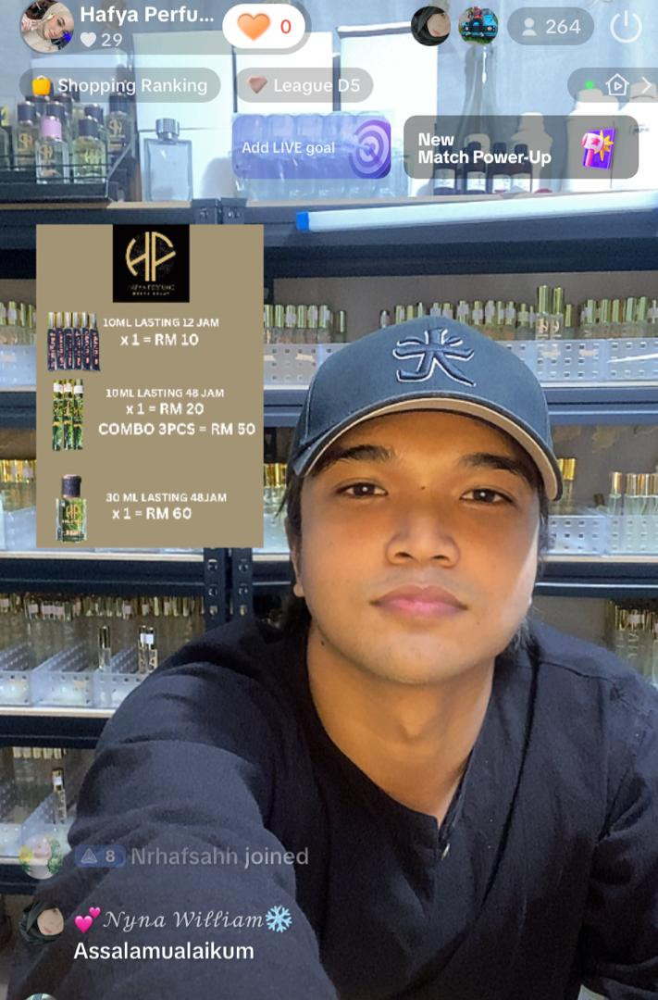
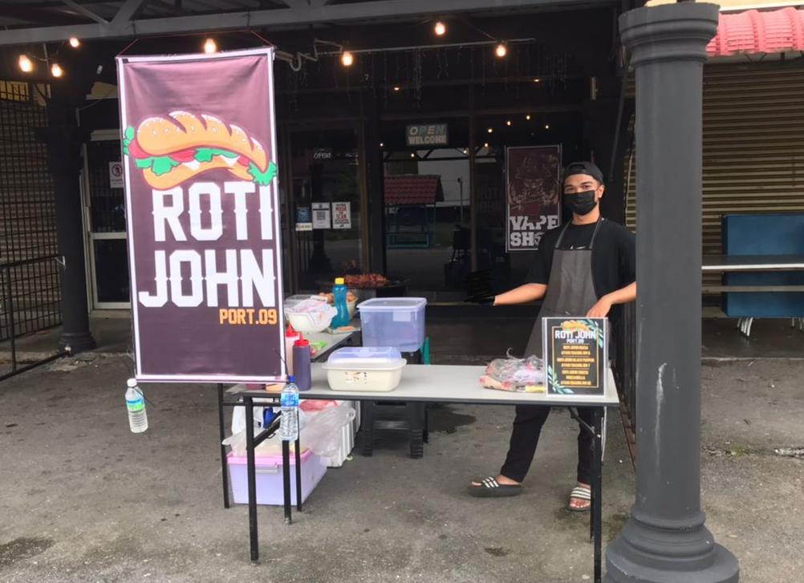
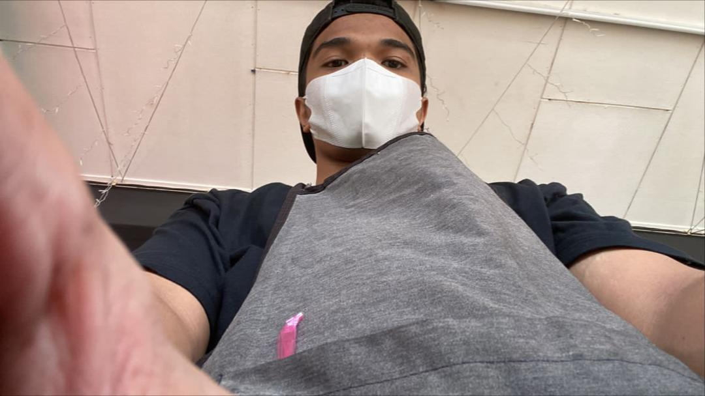
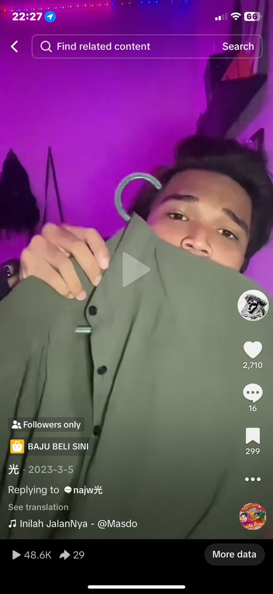

What kind of jobs that I’ve done?
I once sold Roti John during Ramadan, a Tiktok live host, marketer and also affiliate.
Tiktok Live Host & Marketer

Part-time as a Tiktok live host and marketer of Hafya Perfume.
Sold Roti John


Sold Roti John while waiting for my SPM results.
Tiktok Affiliate

Joined Tiktok affiliate program and achieved a great outcome.
Copyright © 2025 Izzairi Roslan